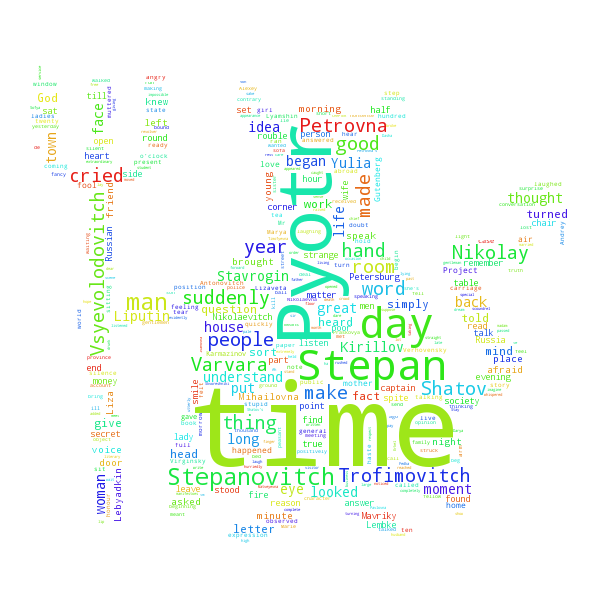

March 2017
Digitre - recognizing handwritten digits
Or a how to make a simple application using Flask and tensorflow
Full code on
This post shows a simple example of how to build word clouds from your
favorite text. It uses the Python library
word_cloud,
which makes this really easy and bla bla bla.
A wrapper function to word_cloud
word_cloud is really easy to use and doesn't leave much for
the user to worry about. It even comes with its own set of stop words. If you are
not familiar with the concept of "stop words", in simple terms it refers to the most
common words in a language. These are typically uninformative words, such as "the"
or "and", for example, that are thus removed during preprocessing in many Natural
Language Processing (NLP) applications. Our word cloud is no exception. We don't
want stop words to dominate the output and hide the less common but more informative
words that define the input document.
I wrote a simple wrapper function called make_word_cloud around the
main function WordCloud. make_word_cloud takes the
input text, a mask file to define the shape, and a name for the output .png
file. Additionally, it allows you to provide your own list of stop words instead of
the one provided by word_cloud. You can also add some extra stop
words manually, in case you spot some uninteresting words creeping into your cloud.
Here's make_word_cloud, together with the required imports.
import time
import base64
from io import BytesIO
from PIL import Image
import numpy as np
def resize_img(img_ndarray):
"""
Resizes digit image to 28x28.
Parameters
----------
img_ndarray: 2D numpy ndarray, shape=(var, var) (depending on drawing)
Image to resize.
Returns
-------
Resized image as 2D numpy ndarray (28x28)
"""
img = Image.fromarray(img_ndarray)
img.thumbnail((28, 28), Image.ANTIALIAS)
return np.array(img)

Much better. We got rid of most common and uninformative words and managed
to get a pretty interesting word cloud. And thanks to the word_cloud
Python library this was really easy. A nice go-to resource for your word cloud
needs.
Happy "word clouding"!